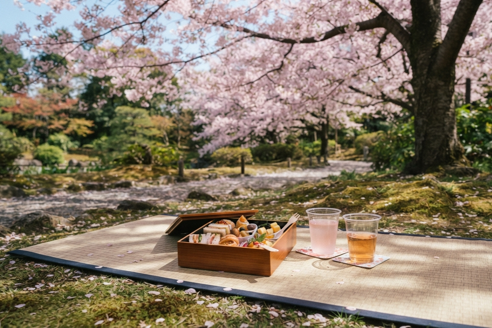
3月～5月上旬頃
お花見ピクニック
庭園の花々を眺めながら、庭園でゆったりとしたひとときを。 春の陽気に包まれて、のんびりお過ごしください。
stay guide
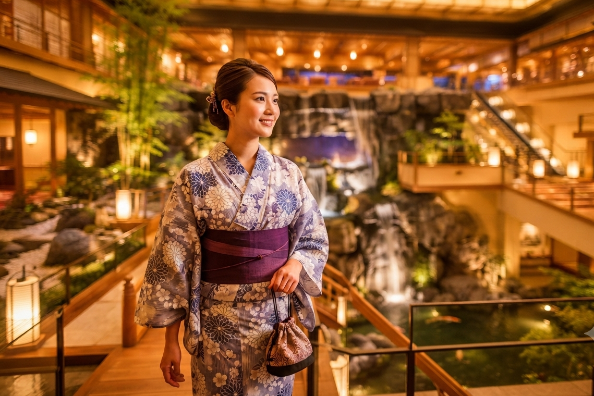
敷地内ですべて完結する、
便利で贅沢な、今までにない温泉旅。
がしみや荘は、最大24時間滞在できるお宿です。 時間を気にせず、思い思いの一日をお過ごしください。

チェックインを済ませたら、まずは火のラウンジへ。 ウェルカムドリンクと軽めのランチをいただきながら、 これから始まる24時間に思いを馳せます。

支度処で色浴衣やアメニティを選び、自分好みの旅支度を。 準備が整ったら、お部屋へ向かいます。
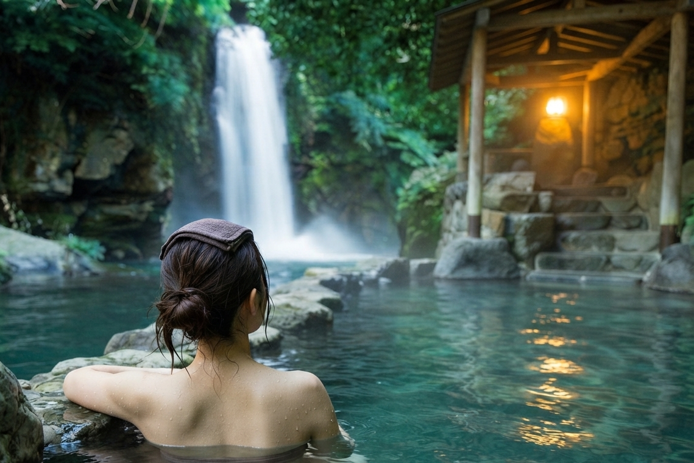
大浴場でゆっくり汗を流したあとは、水のラウンジへ。 冷たいドリンクやアイスを楽しみながら、涼やかにクールダウン。

庭園の貸切露天風呂へ。 自然に囲まれた湯に身を委ねたあとは、 金のラウンジでアフタヌーンティーを。
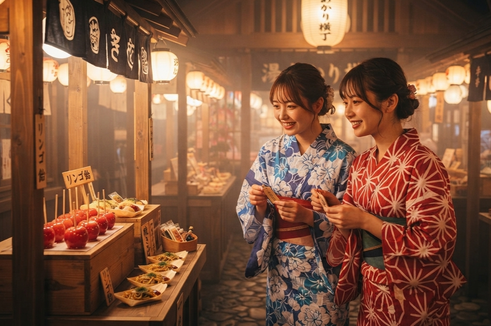
湯あかり横丁へ足を運び、 スマートボールや射的など、 懐かしい縁日の遊びを思いきり楽しみます。

屋上のジムで軽く身体を動かしたら、貸切風呂へ。 汗を流しながら、夕暮れの空を眺めます。
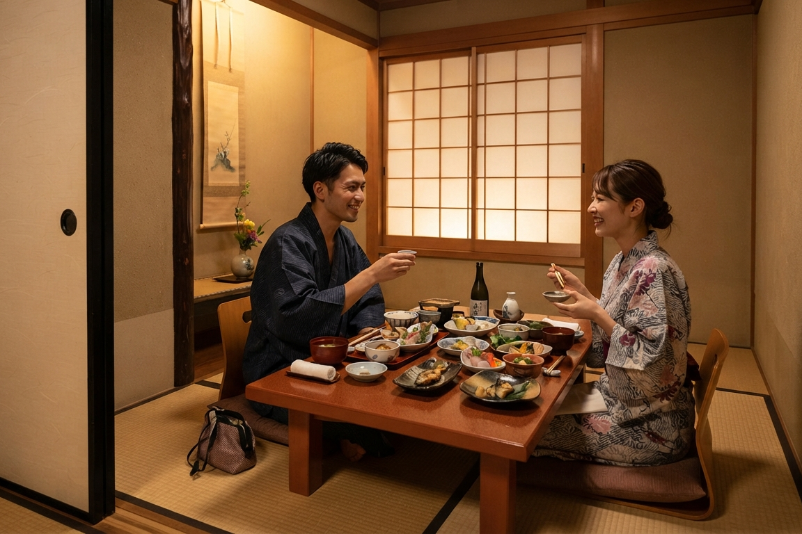
一日の楽しみは、旬の食材をふんだんに使った会席料理。 個室のお食事処で、ゆっくりと季節の味を堪能します。

食後はカラオケへ。 卓球やダーツ、ビリヤードにも挑戦しながら、 遊びの時間をもうひと楽しみ。
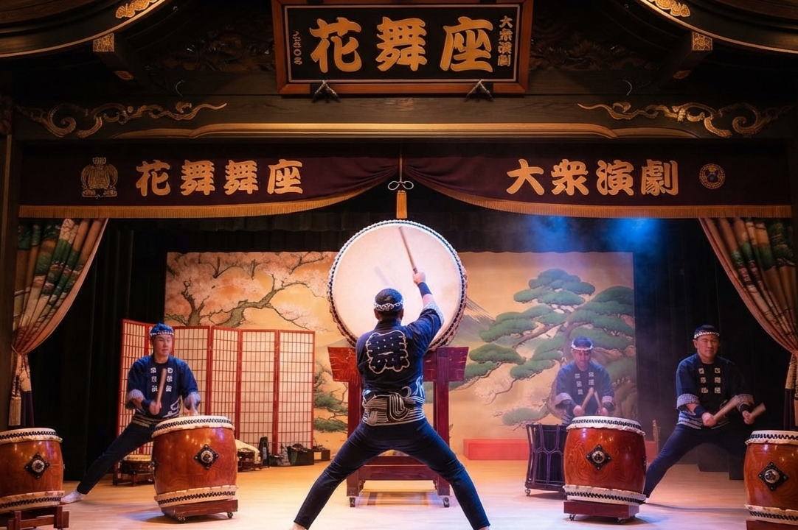
演劇場では、大衆演劇や和太鼓ショーを開催。 音と舞台の熱気に包まれながら、 特別な夜を過ごします。

少し夜風にあたりながら、静かな庭園を散策。 最後は庭園の露天風呂で、 夜の湯にゆっくりと浸かります。
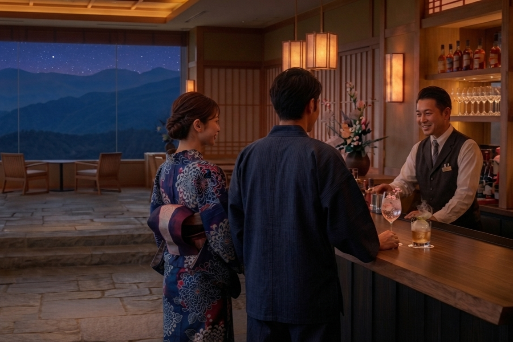
ゲームセンターで遊んだあとは、夜鳴きそばを。 湯上がりの一杯ならぬ、 夜更かしの一杯をどうぞ。

夜が深まる頃は、バーでオリジナルカクテルを。 静かな音楽とともに、 大人だけの夜を楽しみます。
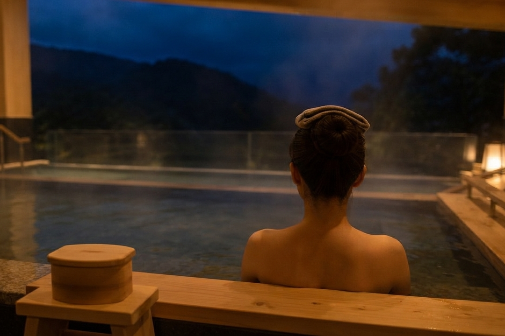
月のラウンジでグラスを傾けながら、夜空を見上げて。 星や夜景を眺めながら、 ゆっくりと夜の時間を味わいます。

土のラウンジで漫画を読んだり、 ボードゲームを楽しんだり。 眠るにはまだ少し早い、そんな夜の過ごし方を。

火のラウンジは深夜も営業。 お酒を片手に、24時間楽しめる軽食やカレーを味わいながら、 もう少し夜更かしを。

眠れない夜は、図書室で本を開いたり、映画を観たり。 誰にも急かされない夜だからこそ、 自分だけの時間をお楽しみください。
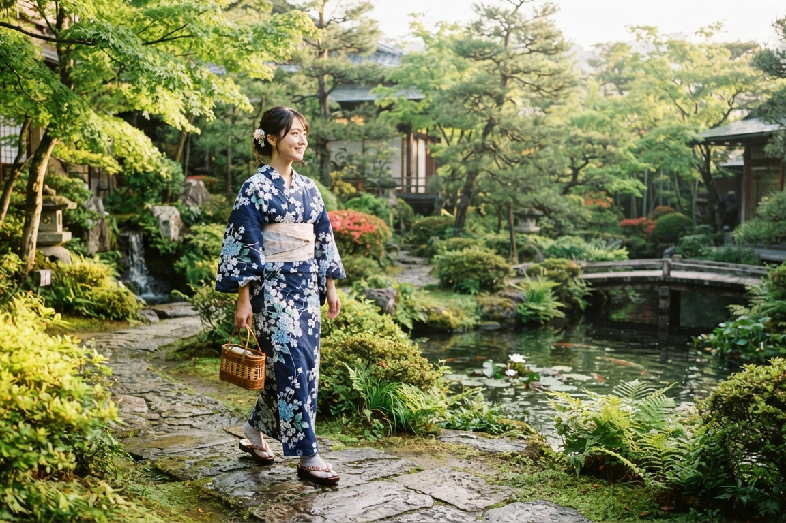
朝の澄んだ空気の中、庭園を散策。 展望台から景色を眺めたり、 庭園の露天風呂で朝湯を楽しんだり、 思い思いの朝を。

エステで身体を整えたり、 岩盤浴でじっくり汗を流したり。 マッサージで旅の疲れをほぐし、 心と身体をゆっくり目覚めさせます。
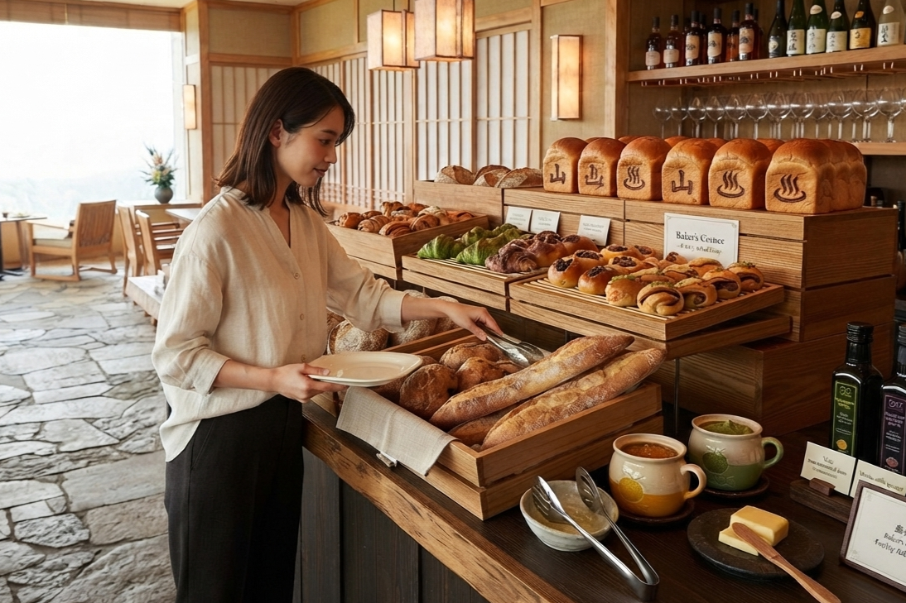
朝食は、彩り豊かな料理が並ぶビュッフェ。 好きなものを好きなだけ味わい、 ゆったりと朝の食卓を楽しみます。

陶芸体験で旅の思い出を形にしたり、 ギャラリーで作品を眺めたり。 チェックアウト前の時間も、ゆっくりと楽しみます。

木のラウンジでキャンプ気分を味わいながら、 もうひと休み。 チェックアウトまで、最後の一時間まで 思い思いに過ごします。

お土産を選びながら、24時間の旅を振り返る時間。 名残惜しさを感じながら、 がしみや荘をあとにします。
SEASONAL EXPERIENCE
春夏秋冬、それぞれの季節にしか出会えない景色や体験を。 庭園やラウンジを舞台に、様々なイベントをご用意しております。
SPRING
花々が咲き、新しい季節の訪れを感じる春。

庭園の花々を眺めながら、庭園でゆったりとしたひとときを。 春の陽気に包まれて、のんびりお過ごしください。
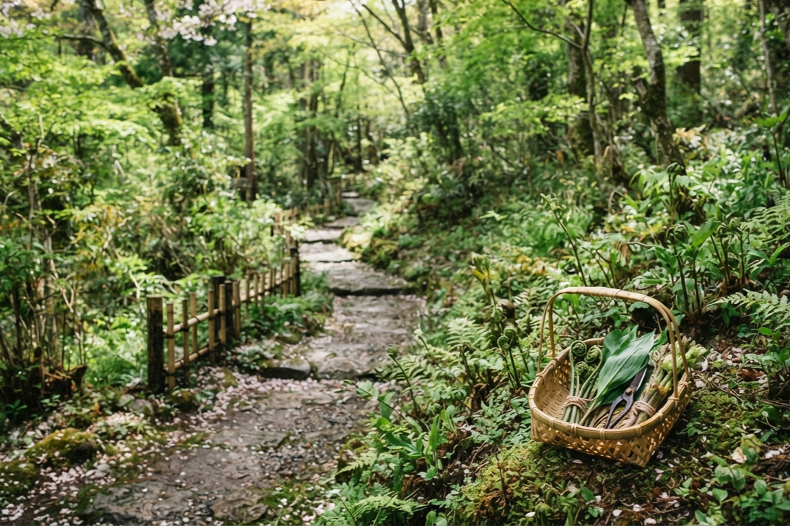
春の庭園に芽吹く山菜を探しながら、季節の訪れを感じるひととき。 摘み取った山菜は、旬の味覚としてお楽しみいただけます。
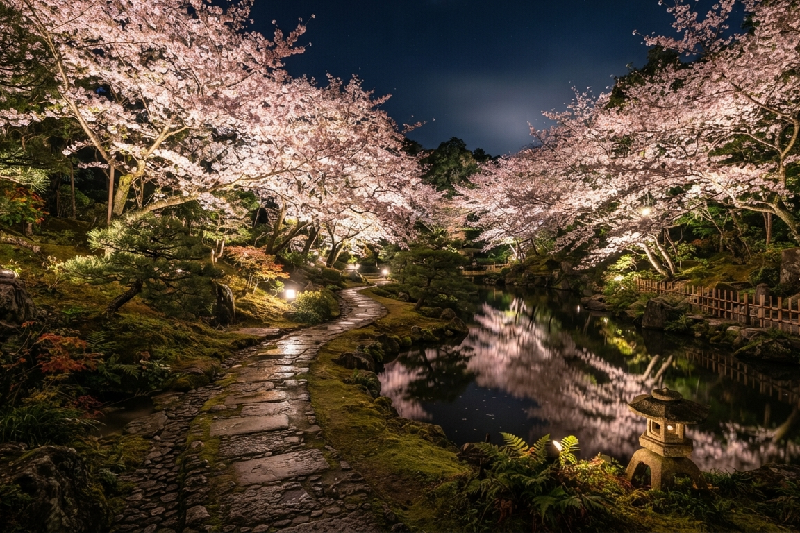
夜の庭園を彩る桜のライトアップ。 昼間とは異なる幻想的な景色を、静かな夜にお楽しみください。
SUMMER
涼やかな風と水辺の景色が心地よい、夏のひととき。
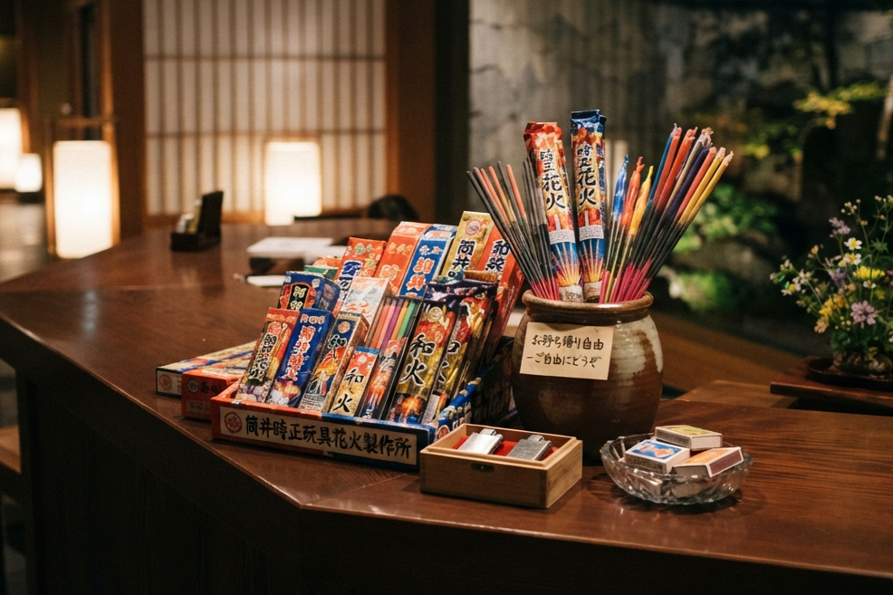
夏の夜は庭園で手持ち花火を。 大人だけの静かな夏の夜を、火の灯りとともにお楽しみください。
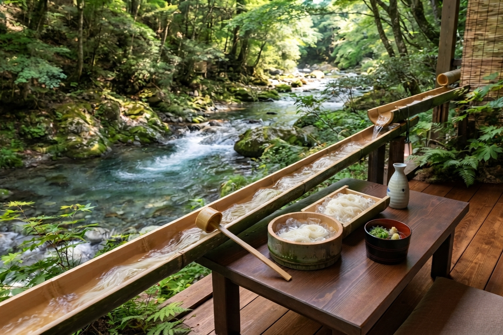
水のラウンジで楽しむ流しそうめん。 薬味や、つけダレも豊富にご用意しております。
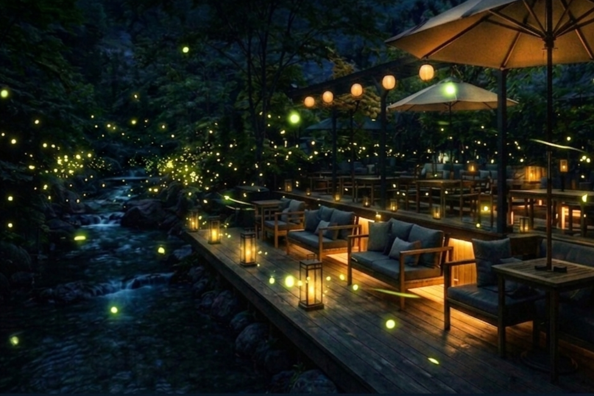
水のラウンジから眺める、夏の夜の蛍。 水辺に舞う淡い光を眺めながら、静かな夜をお過ごしください。
AUTUMN
月明かりと紅葉、実りの季節を楽しむ秋。
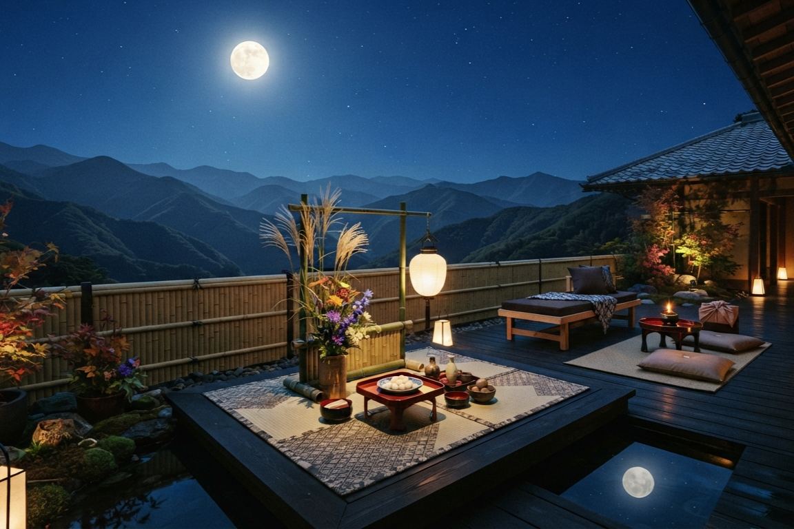
月のラウンジで、秋の夜空に浮かぶ月を眺めながら一杯。 季節の和菓子とともに、ゆっくりと夜をお楽しみください。
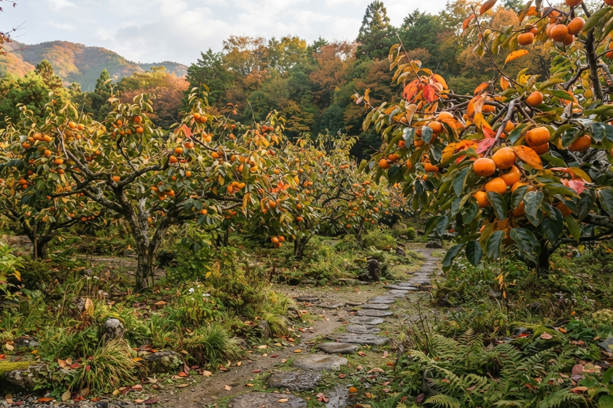
庭園に実る秋の恵みを探しながら、季節の移ろいを感じるひととき。 取れたてをその場で食べたり、お土産にしたり。
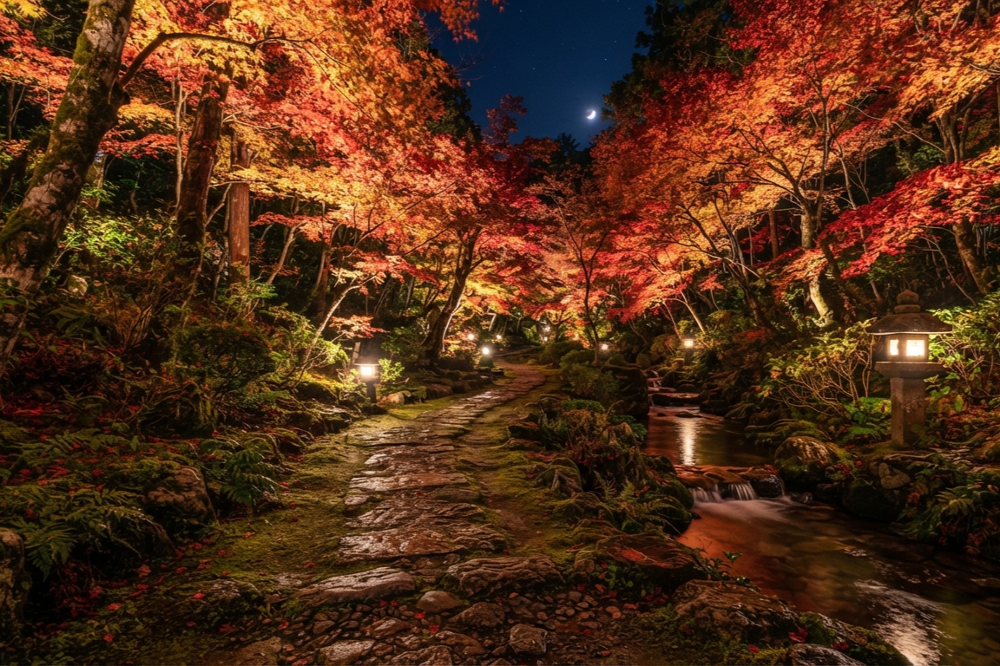
色鮮やかな紅葉が夜の庭園を彩ります。 水面に映る秋の景色を眺めながら、夜の散策をお楽しみください。
WINTER
白銀の景色と灯りが、静かな冬の夜を彩ります。
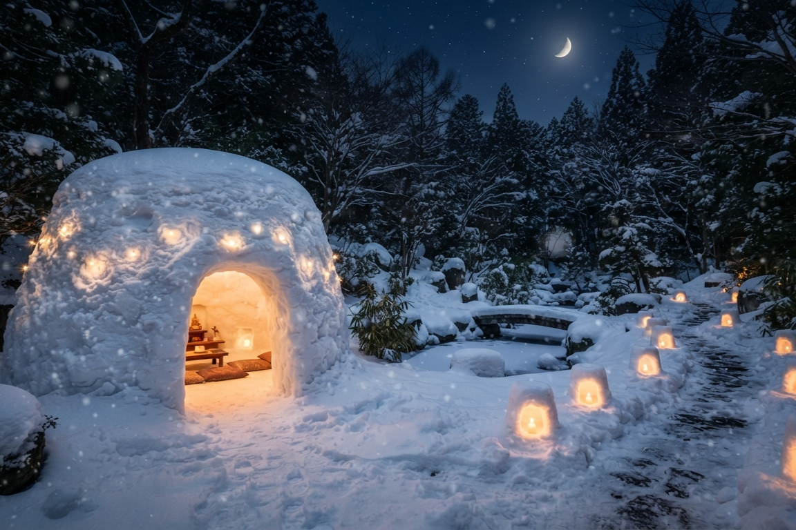
雪が積もる庭園に、かまくらが並ぶ冬の風景。 雪の静けさに包まれながら、幻想的なひとときをお楽しみください。
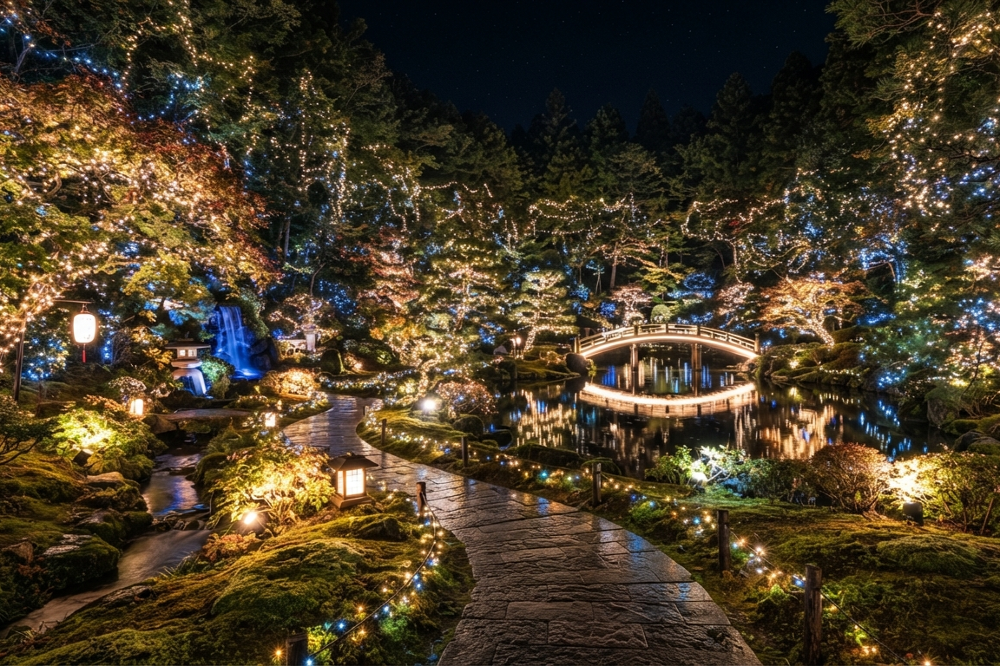
庭園や木のラウンジを彩る冬限定のイルミネーション。 温かな灯りに包まれながら、冬の夜をゆっくりお過ごしください。
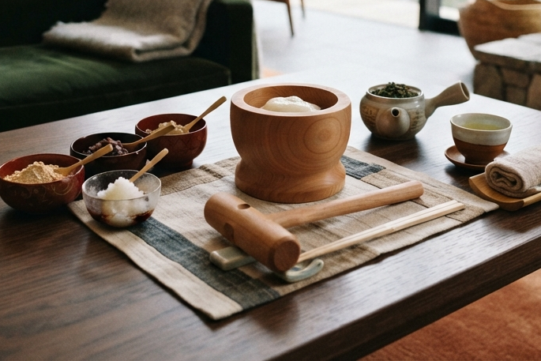
卓上餅つきセットで楽しむミニ餅つき。 付け合わせや味変素材もたくさんご用意しております。